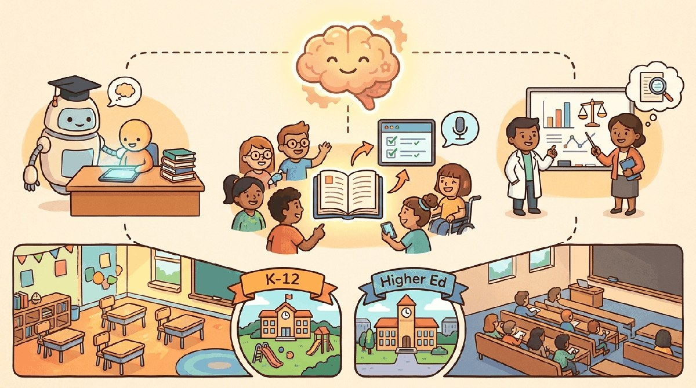

"The best tutor knows where the student is, not where the textbook is."
Sage, Education-Minded AI Agent
Chapter 69 covered healthcare. This chapter is education: tutoring, content generation, assessment, accessibility, and the unique evaluation problem of teaching versus telling.
Education was the first industry where LLMs simultaneously thrilled and terrified practitioners. Thrilling: the long-imagined "tutor for every student" suddenly seemed possible. Terrifying: the "essay-writing assistant for every student" arrived first. 2026 settled some of the early debates (yes, AI tutoring works for specific tasks; no, plagiarism detectors don't reliably identify LLM-generated text) and opened new ones (what does mastery mean when LLMs can do most of the homework?).
The thrilling-tutor anchor is Khan Academy's Khanmigo, the GPT-4-powered tutor that launched in March 2023 and scaled to roughly 65,000 students across 266 school districts by the 2023-24 school year. The integrity-panic anchor is the NYC DOE's Jan 2023 ChatGPT ban, which the same chancellor's office reversed in May 2023 as a public acknowledgement that prohibition was both unenforceable and pedagogically self-defeating. The detection-doesn't-work anchor is Turnitin's AI-detection rollout (Apr 2023), whose published false-positive rates by 2024 made it unusable as a standalone integrity signal.
Section 70.1 walks through the use cases that have stabilized. Section 70.2 covers the failure modes. Section 70.3 covers FERPA, COPPA, and the regulatory framework. Section 70.4 walks through the pedagogically-scaffolded tutor architecture. Section 70.5 closes with the vendor landscape.
Chapter Overview
Education LLM deployment is the chapter where pedagogical evidence, learner well-being, and aggressive vendor marketing collide. This chapter walks the use cases that actually work (Socratic tutoring, assessment generation, accessibility, teacher support, programming education), the failure modes specific to education (plagiarism-detector mirage, hallucinated citations, learning-loss through over-reliance, FERPA exposure), the regulatory and policy framework (FERPA, COPPA, EU AI Act, academic-integrity policies, accreditation), the pedagogically-scaffolded tutor architecture shared by Khanmigo, Magic School, Duolingo Max, and others, and the vendor landscape plus canonical sources.
Education AI is the industry where wrong answers can shape a learner's mental model for years. This chapter teaches what works pedagogically, what fails reliably, and what FERPA and COPPA actually require.
- Map the education use cases (Socratic tutoring, assessment, accessibility, teacher support) that actually work.
- Diagnose the plagiarism-detector mirage, hallucinated citations, and learning-loss failure modes.
- Apply FERPA, COPPA, EU AI Act, and academic-integrity policies to an education deployment.
- Architect a pedagogically-scaffolded tutor with retrieval, evaluation, and over-reliance mitigations.
- Evaluate education LLM vendors (Khanmigo, Magic School, Duolingo Max, ChatGPT Edu, Anthropic for Education) against pedagogical and compliance fit.
Sections in This Chapter
Prerequisites
- Conversational AI from Chapter 37
- RAG fundamentals from Chapter 32
- Bias and fairness from Chapter 52
- 75.1 Educational Use Cases That Actually Work Socratic tutoring, assessment generation, accessibility, teacher support, and programming education.
- 75.2 Failure Modes Specific to Education Plagiarism-detector mirage, hallucinated citations, learning-loss through over-reliance, FERPA exposure.
- 75.3 Regulatory and Policy Framework for Education LLMs FERPA, COPPA, EU AI Act, academic-integrity policies, accreditation considerations.
- 75.4 Pedagogically-Scaffolded Tutor Architecture The five-layer pattern shared by Khanmigo, Magic School, Duolingo Max, and the major education LLM products.
- 75.5 Education LLM Vendors and Further Reading Khanmigo, Magic School, Duolingo Max, ChatGPT Edu, Anthropic for Education, and the FERPA/COPPA references.
What Comes Next
Education produced the Socratic-prompt-as-product pattern that the next vertical inverts: Chapter 71 on cybersecurity covers the industry where the same prompt-injection failure mode that educational LLMs treat as a pedagogical inconvenience is treated as a primary attack vector.